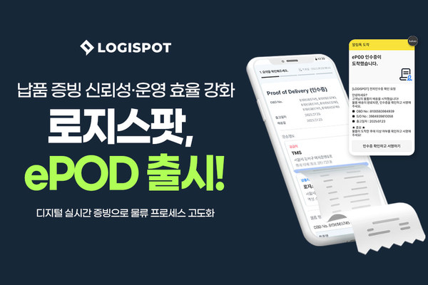
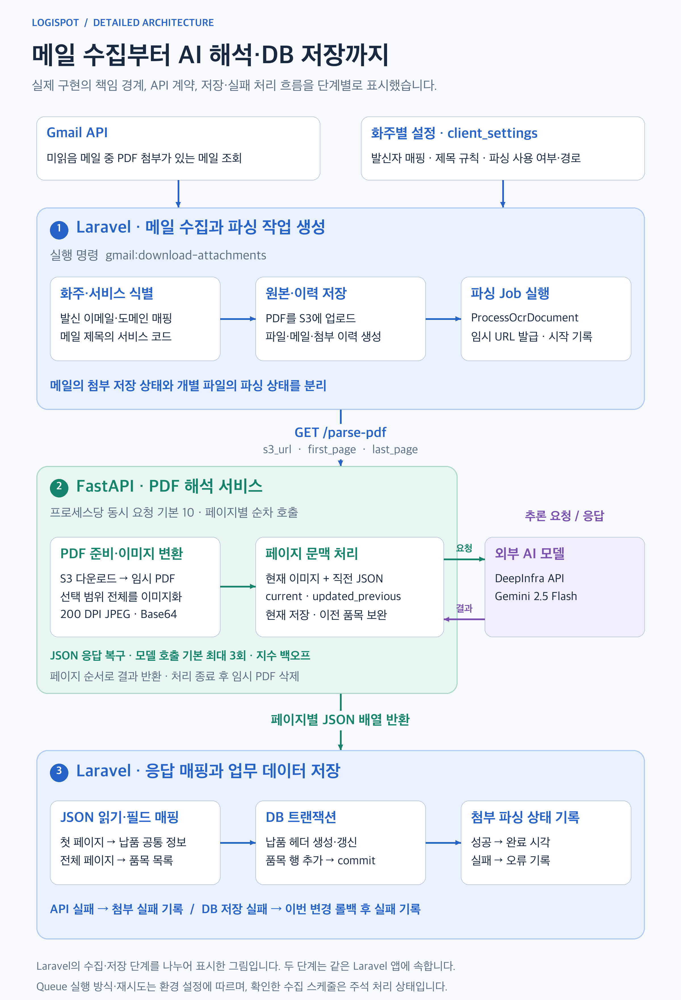
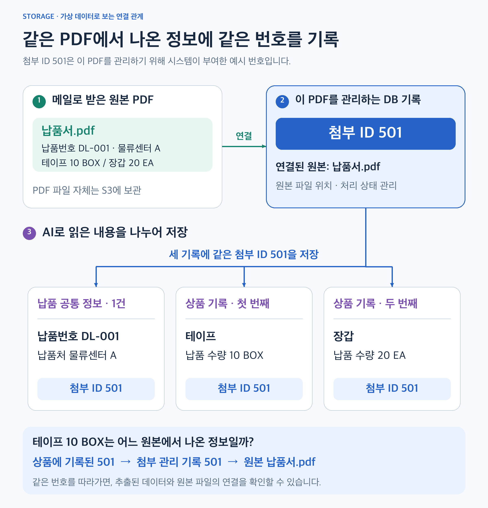
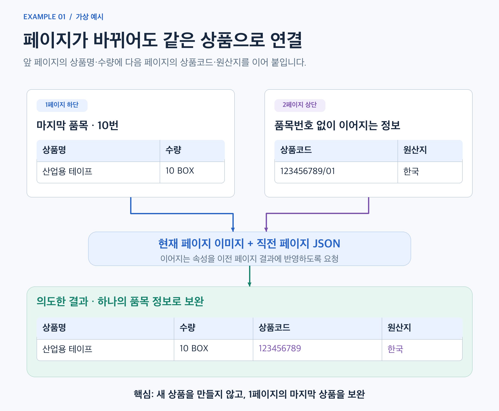
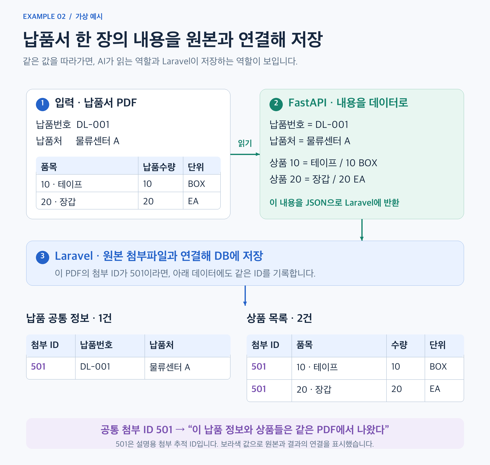
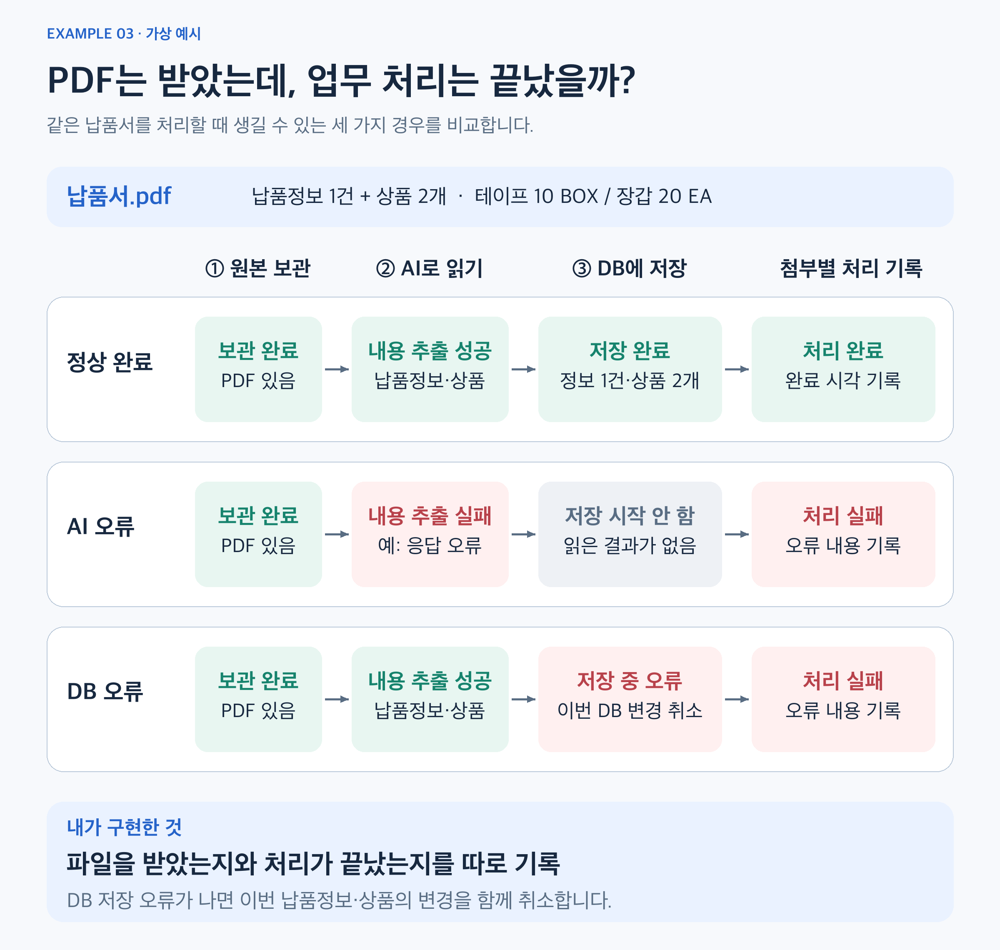
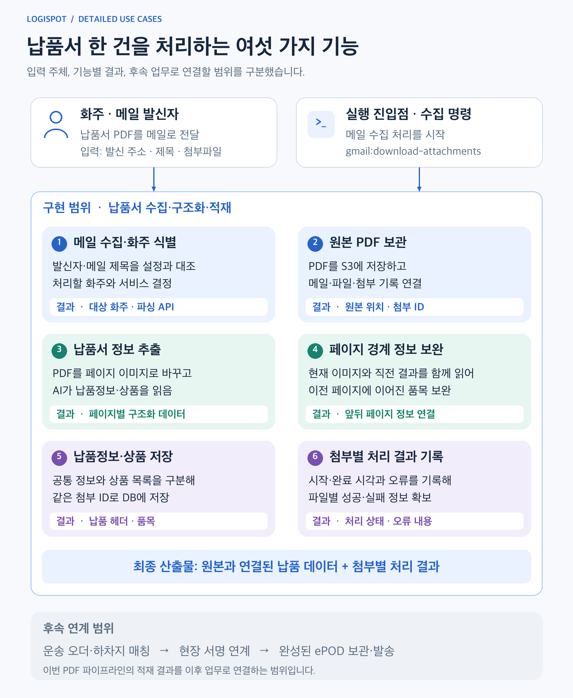

AI 기반 납품서 PDF 파싱과 Laravel 데이터 연계

- 서비스 링크
https://logi-spot.com/press-epod-system-launch/
https://www.klnews.co.kr/news/articleView.html?idxno=318840
01. 전체 아키텍처
Laravel은 메일 수집·작업 실행·DB 저장을, FastAPI는 PDF 해석을 담당합니다. 원본 파일을 S3에 보관한 뒤 임시 URL로 AI 서비스에 전달하고, 추출 결과를 첨부 이력과 연결해 저장하는 구조입니다.

그림 1 · 메일 수집부터 페이지별 AI 해석, 응답 매핑과 DB 저장까지의 전체 처리 흐름
API 요청·응답 상세
| 구간 | 실제 전달·처리 내용 |
|---|---|
| 호출 주체 | Laravel의 ProcessOcrDocument Job이 화주 설정의 파싱 경로로 요청합니다. 기본 주소는 FASTAPI_BASE_URL, 경로는 atch_ocr_endpoint 설정을 사용합니다. |
| 요청 | FastAPI의 GET /parse-pdf에 s3_url(원본 PDF 임시 URL), first_page=1, last_page(첨부의 전체 페이지 수)를 전달합니다. |
| AI 처리 | 현재 페이지 이미지와 직전 페이지 JSON을 모델에 전달합니다. 모델이 반환한 current와 updated_previous를 FastAPI 내부에서 반영해 페이지 사이에 이어지는 정보를 보완합니다. |
| 응답 | 보완 결과를 반영한 페이지별 JSON 배열을 Laravel에 반환합니다. |
| 저장 | 첫 페이지에서 납품 공통 정보를, 전체 페이지에서 품목 정보를 읽습니다. 헤더와 품목을 하나의 DB 트랜잭션으로 저장한 뒤 첨부의 파싱 완료 상태를 기록합니다. |
실패 처리: 모델 호출은 기본 최대 3회 시도와 지수 백오프를 적용합니다. API 오류는 첨부별 실패 이력에 남기고, DB 저장 오류는 해당 트랜잭션을 롤백한 뒤 기록합니다.
저장 데이터 관계 · 원본과 추출 결과는 어떻게 연결되는가?
한 PDF에서 읽어낸 납품정보와 상품 기록에 같은 첨부 ID를 남겨, 어느 원본에서 나온 데이터인지 알 수 있게 했습니다.
아래 예시에서 501은 납품서.pdf를 관리하는 DB 기록의 번호입니다. 납품 공통 정보 1건과 상품 2건이 모두 이 번호를 참조합니다.

그림 1-1 · 원본 PDF 한 개와 추출 결과 세 건을 첨부 ID 501로 연결한 가상 예시
그림을 읽는 순서
- 원본 보관: 메일로 받은
납품서.pdf를 S3에 보관하고, 이 파일과 연결된 첨부 관리 기록501을 만듭니다. - 내용 저장: 납품번호·납품처는 공통 정보 1건으로, 테이프와 장갑은 상품 2건으로 나누어 저장합니다. 세 기록에 모두
첨부 ID = 501을 기록합니다. - 원본 확인: 테이프
10 BOX의 출처를 확인하려면 상품의501→ 첨부 관리 기록 → 연결된 파일 정보를 따라 원본 PDF를 찾을 수 있습니다.
왜 공통 정보와 상품을 나누나요? 납품번호·납품처는 문서의 공통 내용이어서 한 건으로, 상품은 품목 수만큼 여러 건으로 저장하기 때문입니다. 같은 첨부 ID를 기록해 이 데이터들이 한 원본에서 나온 정보임을 연결합니다.
번호의 의미: 501은 시스템이 부여한 첨부 관리 번호이고, DL-001은 예시 납품서에 적힌 납품번호입니다.
실제 연결 경로: 납품 공통 정보·상품 → 첨부 이력 → 파일 정보 → S3 원본. 수신 메일 정보도 첨부 이력과 연결되어 있습니다.
02. 해결한 문제와 기술적 기여
아래 예시는 구현 방식을 설명하기 위한 가상 데이터와 상황입니다.
1. 페이지가 바뀌면 끊어지는 상품 정보
납품서의 상품명·수량은 앞 페이지에, 상품코드·원산지는 다음 페이지에 나타날 수 있어 페이지별 독립 추출만으로는 같은 상품의 정보를 연결하기 어려웠습니다.
현재 페이지 이미지와 직전 페이지 JSON을 함께 전달하고, 현재 결과와 이전 결과의 보완 내용을 나누어 반환하도록 구현했습니다. 상품코드, 수량·단위 등 3M 문서 규칙도 프롬프트에 반영해 문서의 배치와 업무 의미를 함께 해석하도록 했습니다.

예시 1 · 처리 방식 자세히 보기
2. AI 추출 결과를 기존 업무 시스템에 연결
AI가 납품서를 읽은 뒤에는, 추출한 값을 원본 파일과 연결된 납품 데이터로 저장해야 후속 업무에서 활용할 수 있습니다.
FastAPI는 문서 내용 추출, Laravel은 결과의 업무 DB 저장을 담당하도록 연결했습니다. Laravel이 S3 임시 URL로 파싱을 요청하고, 반환된 값을 납품 공통 정보와 상품 목록으로 나누어 같은 첨부 ID에 저장하도록 구현했습니다.

이 예시의 핵심: AI가 읽은 납품 정보 1건과 상품 2건에 같은 첨부 ID를 기록해, 모두 어느 원본 PDF에서 나온 데이터인지 알 수 있도록 연결했습니다.
예시 2 · 처리 순서와 기술 상세
- 원본 등록: Laravel이 납품서 PDF를 S3에 저장하고 첨부 이력을 만듭니다. 그림에서는 이 첨부 추적 ID를 가상의 값
501로 표시했습니다. - AI 추출 요청: Laravel이 원본을 읽을 수 있는 임시 URL과 페이지 범위를 FastAPI에 전달합니다.
- 내용 반환: FastAPI가 납품번호
DL-001, 납품처물류센터 A, 테이프10 BOX와 장갑20 EA를 읽어 JSON으로 반환합니다. - 업무 DB 저장: Laravel이 납품번호·납품처는 공통 정보 1건으로, 상품은 품목 2건으로 나누어 저장합니다. 세 기록 모두 첨부 ID
501을 참조합니다.
여기서 납품 공통 정보는 email_service_pod_headers, 상품 목록은 email_service_pod_details입니다. 첨부 ID는 원본 파일과 연결된 첨부 이력의 ID이며, 파일 ID나 납품 헤더 ID와는 구분됩니다.
예를 들어 납품 수량 10 BOX는 delivery_qty = 10, delivery_qty_unit = BOX로 나눠 저장합니다. 헤더와 품목 저장은 하나의 DB 트랜잭션으로 처리합니다.
3. 파일 수신 성공과 데이터 처리 성공을 구분
납품서 PDF를 받아 보관했더라도, AI가 내용을 읽지 못하거나 DB 저장에 실패하면 업무에 사용할 납품 데이터는 준비되지 않습니다. 파일을 받았다는 상태만으로는 이 차이를 알기 어려웠습니다.
메일의 첨부 저장 상태와 각 PDF의 처리 결과를 따로 기록했습니다. 실패한 첨부에는 오류 내용을 남기고, 납품 공통 정보와 상품 목록은 하나의 저장 단위로 묶어 중간에 DB 오류가 나면 이번 변경을 함께 취소하도록 구현했습니다.

이 예시의 핵심: 세 경우 모두 PDF 원본은 보관돼 있지만, 납품정보와 상품 저장까지 끝난 것은 첫 번째 경우입니다. 파일 보관 여부와 별도로 처리 결과를 기록해 실패한 첨부를 확인할 수 있게 했습니다.
예시 3 · 저장을 함께 취소하는 이유와 기술 상세
왜 저장을 함께 취소하나요?
납품번호·납품처만 저장되고 테이프·장갑 같은 상품은 빠져 있다면, 납품서 데이터가 일부만 남게 됩니다. 이를 막기 위해 공통 정보와 상품 목록을 모두 저장한 뒤 확정하고, 중간에 DB 오류가 나면 이번 작업의 변경을 함께 되돌리도록 했습니다. 이 처리가 DB 트랜잭션과 롤백입니다.
구현한 처리
- 결과 기록: 첨부별로 처리 시작 시각을 남기고, 성공하면 완료 시각을, 실패하면 오류 내용을 기록합니다.
- AI 호출 재시도: 모델 호출은 기본 최대 3회 시도합니다. 오류가 나면 기다리는 시간을 늘려 다시 요청하는 지수 백오프를 적용했습니다.
- 응답 복구: 모델 응답에 코드 블록 등의 형식이 섞여 있으면 JSON을 다시 읽는 복구 절차를 적용했습니다.
- 저장 단위: 납품 공통 정보인
email_service_pod_headers와 상품 목록인email_service_pod_details의 변경을 하나의 트랜잭션으로 처리합니다.
03. 유즈케이스와 구현 범위
수집 명령을 실행하면 메일에서 납품서 PDF를 찾아 원본을 보관하고, AI 추출 결과를 업무 DB에 저장합니다. 이 과정을 여섯 가지 기능으로 구성하고, 원본·납품 데이터·처리 결과를 첨부 ID로 연결했습니다.

그림 2 · 입력 주체와 여섯 가지 업무 기능, 각 기능의 결과 및 후속 연계 범위
여섯 가지 기능의 입력·처리·결과 자세히 보기
| 기능 | 입력과 처리 | 결과 |
|---|---|---|
| 1. 메일 수집·화주 식별 | 미읽음 PDF 첨부 메일을 조회하고, 발신 주소·도메인과 제목을 화주 설정 및 서비스 규칙에 대조합니다. 파싱 사용 여부와 호출 경로를 확인합니다. | 처리할 화주·서비스 코드·파싱 API 경로 결정 |
| 2. 원본 PDF 보관 | 첨부 PDF를 S3에 업로드하고 페이지 수와 파일 정보를 기록합니다. 메일 이력, 파일 정보, 첨부 추적 기록을 연결합니다. | 원본 파일 위치·전체 페이지 수·첨부 추적 ID |
| 3. 납품서 정보 추출 | Laravel이 원본의 임시 URL과 페이지 범위를 전달합니다. FastAPI가 페이지 이미지를 만들어 모델에 납품정보·품목 추출을 요청합니다. | 납품번호·납품처·상품·수량 등을 담은 페이지별 JSON |
| 4. 페이지 경계 정보 보완 | 현재 이미지와 직전 페이지 JSON을 함께 전달합니다. 현재 결과와 이전 페이지 보완 내용을 구분해 받아 FastAPI 내부에서 반영합니다. | 페이지 사이에 이어지는 품목 정보를 보완한 추출 결과 |
| 5. 납품정보·상품 저장 | 첫 페이지의 공통 정보와 전체 페이지의 품목을 DB 필드에 매핑합니다. 헤더와 품목의 변경을 하나의 트랜잭션으로 저장합니다. | 같은 첨부 ID에 연결된 납품 헤더 1건과 품목 여러 건 |
| 6. 첨부별 처리 결과 기록 | 메일의 첨부 저장 상태와 별도로, 각 PDF의 처리 시작·성공·실패를 기록합니다. 성공 시 완료 시각을, 실패 시 오류 내용을 남깁니다. | 첨부별 최근 처리 상태·시작/완료 시각·오류 정보 |
실행 조건과 기존 ePOD 기능과의 관계
- 실행 진입점:
gmail:download-attachments명령에서 처리를 시작합니다. 확인한 코드에서 정기 실행 스케줄은 주석 상태이며, Job의 실행 방식과 재시도는 Queue 환경 설정에 따릅니다. - 처리 결과 확인: 첨부별 상태와 오류를 DB에 기록하는 범위입니다. 별도의 운영 조회 화면 구현을 포함한다는 의미는 아닙니다.
- 기존 기능과의 관계: Laravel의 기존 인수증·서명 파일 관리와 이번 PDF 적재 파이프라인은 별도 흐름입니다. 적재한 납품 데이터를 운송 오더와 서명에 연결하는 작업은 후속 연계 대상입니다.
04. 구현 결과
- 수집부터 저장까지 연결: 메일 첨부 → S3 원본 → AI 추출 → Laravel DB로 이어지는 처리 경로를 구현했습니다.
- 문서 특성을 반영한 추출: 직전 페이지의 문맥을 전달해 페이지 경계에서 이어지는 상품 정보를 보완하는 방식을 적용했습니다.
- 업무 연계 기반 확보: 납품 헤더·품목을 구조화하고, 첨부 단위로 처리 상태와 오류를 확인할 수 있는 이력을 남겼습니다.